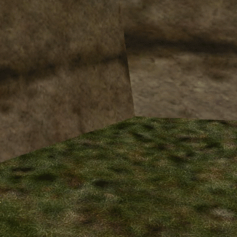
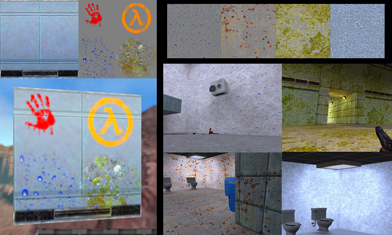
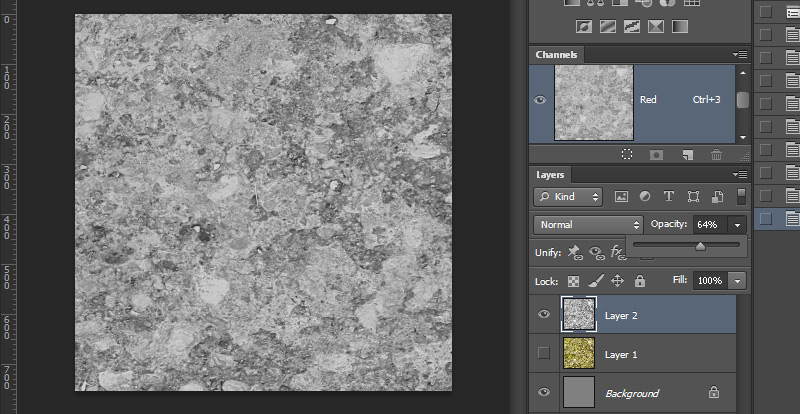
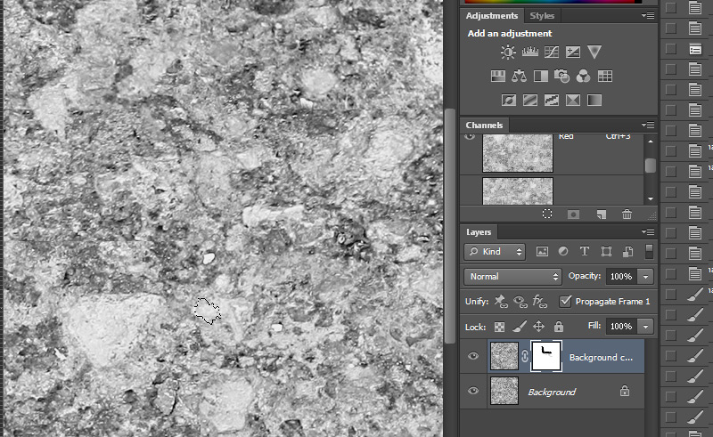

GoldSrc Map Texture Tutorial
PART 9: DETAIL Textures
Detail textures are special textures that are used to enhance existing textures and have the ability to be independently tiled. Here are some examples from "Day of Defeat":

These detail textures use an "overlay" style of blending where lighter colors lighten, darker colors darken an color RGB 128,128,128 is invisible (or shows through the original texture). Detail textures are assigned through a text file that names the texture the detail texture will be applied to and two numbers for tiling scale values.
Unlike regular map textures that must be stored in a .wad and be of indexed color, detail textures are 24bit uncompressed targa images that are located in
Half-Life/(modname)/gfx/detail/mytexture.tga. 128X128 and 256X256 are the ideal sizes for detail textures.
In order to make the detail textures work a text file has to be created in your maps folder (Half-Life/(modname)/maps) with a name of "yourmapname_detail.txt". An example of the contents of this text file would be something like:
c1a0_labw7 detail/dents 2.0 2.0
Below is an example that shows a standard detail texture and the second shows how the overlay blending works on gradients, bumps and noise so you can get an idea of how it affects the base texture.
This example used 1.0 1.0 which is matched to the original texture. Higher numbers increase the tiling as seen here:
Keep in mind you are not limited to monochrome; color detail works too and can be very effective:

One thing to note is to first check in your console If detail textures are enabled, the cvar is "r_detailtextures 1". If it is set to 0 then they will not appear. In many mods they are enabled by default or choosable in the options like Day of Defeat, but its good practice just to make sure.
1) Start out an image with a fill of 50% Gray. This will be your starting point as 50% Gray is invisible in overlay blending.
2) Desaturate the image by either using image>adjustments>desaturate or by copying one of the RGB channels since they sometimes can have better contrast.

3)If needed djust the image by changing the layer opacity unto the grey background or layer mask it. Levels or curves can help too.

4) Now we need to make the image tileable. Duplicate the layer and on the topmost layer run a filter>offset. This tiles the image in the space so you can see the seams. In this example its a little hard to see but look for the two seams intersection in a cross shape.
5) Using a layer mask and a rough edged brush paint out the cross so the bottom layer shows through. This is the quick method that should work for most things.

5a) For other things you can use the standard method of carefully clone-stamping details.
6) Once you are done, flatten the image and offset again. Doing this a second time so you can be absolutely sure that you have painted out all the seams.
Now an optional step but something that might be necessary is to correct lighting variations. This happens sometimes where you can paint out seems but the overall image is lighter and darker in areas and looks bad and obvious in tiling. We can correct overall lighting variations with the filter "High Pass". Keep in mind high pass is tricky to use and can destroy some detail, or in other cases might make a cool texture at lower radius.
7)A final test you can do before saving is put an existing texture image underneath your layer and then setting your texture to overlay layer blending mode.
8)Resize your image using bilinear resizing filter (as bicubic sharper/auto may add a seam). This image in particular ive resized to 128X128 Save out your image as a TGA file and as "24 bit" on file type. This image is saved out into Half-Life/(modname)/gfx/detail/rough.tga.
Now create a text file with the same name as your map with "_detail.txt" at the end. Open it up and add an existing or custom texture name you have, then the detail path and finally the tiling value as so:
9) The final result